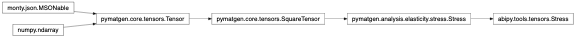
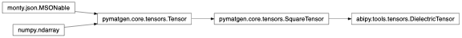

tools Package¶
Contents
tools Module¶
Helper functions.
bessel Module¶
This module provides functions to compute integrals of Bessel functions.
-
abipy.tools.bessel.spline_int_jlqr(l, qmax, rcut, numq=None, numr=None)[source]¶ Compute \(j_n(z) = \int_0^{rcut} r^2 j_l(qr) dr\) where \(j_l\) is the Spherical Bessel function.
- Parameters
l – Angular momentum
qmax – Max \(|q|\) in integral in Ang-1
rcut – Sphere radius in Angstrom.
numq – Number of q-points in qmesh.
numr – Number of r-points for integration.
- Returns
Spline object.
decorators Module¶
Decorators.
-
abipy.tools.decorators.return_straceback_ifexc(func)[source]¶ Decorator for functions that are supposed to return a string for logging purposes (e.g. str) Instead of raising an exception, the decorated function returns a string with the traceback so that execution can continue.
-
abipy.tools.decorators.timeit(method)[source]¶ timeit decorator adapted from: https://medium.com/pythonhive/python-decorator-to-measure-the-execution-time-of-methods-fa04cb6bb36d sets the timing of the routine as an attribute of the class
derivatives Module¶
Tools for computing derivatives by finite differences.
-
abipy.tools.derivatives.finite_diff(arr, h, order=1, acc=4, index=None)[source]¶ Compute the derivative of order order by finite difference. For each point in arr, the function tries to use central differences and fallbacks to forward/backward approximations for points that are close to the extrema. Note that high accuracy levels can fail and raise ValueError if not enough points are available in arr.
- Parameters
arr – Input array with y-values.
h – Spacing along x
order – Derivative order
acc – accuracy level.
index – If not None, gives the index of the single element in arr where the derivative is wanted. In this case a namedtuple with the derivative, the number of points used and the mode is returned
- Returns
numpy array or (value, npts, mode) if index is not None .
devtools Module¶
-
abipy.tools.devtools.profile(statement, global_vars, local_vars)[source]¶ Run statement under profiler, supplying your own globals and locals
Example:
stats = profile("main()", global_vars=globals(), local_vars=locals())
-
class
abipy.tools.devtools.HtmlDiff(filepaths)[source]¶ Bases:
objectThis object produces diff files in HTML format and displays them in the browser.
Usage example:
HtmlDiff(filepaths).open_browser()
-
open_browser(diffmode='difflib', **kwargs)[source]¶ Generate diff with
diffmode, open browser, return exit code.
-
duck Module¶
Duck-typing tests
-
abipy.tools.duck.is_intlike(obj)[source]¶ True if obj represents an integer (float such as 1.0 are included as well).
-
abipy.tools.duck.list_ints(arg)[source]¶ Always return a list of int, given a int or list of integers as input.
- Examples
>>> list_ints(1) [1]
-
abipy.tools.duck.torange(obj)[source]¶ Convert obj into a range. Accepts integer, slice object or any object with an __iter__ method. Note that an integer is converted into range(int, int+1)
>>> list(torange(1)) [1] >>> list(torange(slice(0, 4, 2))) [0, 2] >>> list(torange([1, 4, 2])) [1, 4, 2]
-
abipy.tools.duck.as_slice(obj)[source]¶ Convert an integer, a string or a slice object into slice.
>>> assert as_slice(5) == slice(5, 6, 1) >>> assert as_slice("[1:4]") == slice(1, 4, 1) >>> assert as_slice("1::2") == slice(1, None, 2)
-
abipy.tools.duck.hasattrd(obj, name)[source]¶ The arguments are an object and a string. The result is True if the string is the name of one of the object’s attributes, False if not. Unlike the builtin hasattr, hasattrd supports dot notation e.g. hasattr(int, “__class__.__name__”) (This is implemented by calling getattrd(object, name) and seeing whether it raises an exception or not.)
-
abipy.tools.duck.getattrd(obj, name, default=<class 'abipy.tools.duck.NoDefaultProvided'>)[source]¶ Same as getattr(), but allows dot notation lookup e.g. getattrd(obj, “a.b”)
Raises: AttributeError if
nameis not found anddefaultis not given.Discussed in: http://stackoverflow.com/questions/11975781
fftprof Module¶
Python interface to fftprof. Provides objects to benchmark the FFT libraries used by ABINIT and plot the results with matplotlib.
-
class
abipy.tools.fftprof.FFTBenchmark(title, FFT_tests)[source]¶ Bases:
objectContainer class storing the results of the FFT benchmark.
Use the class method
from_fileto generate a new instance.-
plot(exclude_algs=None, exclude_threads=None, **kwargs)[source]¶ Plot the wall-time and the speed-up.
Keyword arguments controlling the display of the figure:
kwargs
Meaning
title
Title of the plot (Default: None).
show
True to show the figure (default: True).
savefig
“abc.png” or “abc.eps” to save the figure to a file.
size_kwargs
Dictionary with options passed to fig.set_size_inches e.g. size_kwargs=dict(w=3, h=4)
tight_layout
True to call fig.tight_layout (default: False)
ax_grid
True (False) to add (remove) grid from all axes in fig. Default: None i.e. fig is left unchanged.
ax_annotate
Add labels to subplots e.g. (a), (b). Default: False
fig_close
Close figure. Default: False.
-
iotools Module¶
IO related utilities.
-
class
abipy.tools.iotools.ExitStackWithFiles[source]¶ Bases:
contextlib.ExitStackContext manager for dynamic management of a stack of file-like objects. Mainly used in a callee that needs to return files to the caller
Usage example:
exit_stack = ExitStackWithFiles() exit_stack.enter_context(phbst_file) return exit_stack
-
abipy.tools.iotools.ask_yes_no(prompt, default=None)[source]¶ Ask a question and return a boolean (y/n) answer.
If default is given (one of ‘y’,’n’), it is used if the user input is empty. Otherwise the question is repeated until an answer is given.
An EOF is treated as the default answer. If there is no default, an exception is raised to prevent infinite loops.
Valid answers are: y/yes/n/no (match is not case sensitive).
-
exception
abipy.tools.iotools.EditorError[source]¶ Bases:
ExceptionBase class for exceptions raised by Editor
notebooks Module¶
Tools for ipython notebooks.
-
abipy.tools.notebooks.print_source_in_module(function, module)[source]¶ For use inside an jupyter notebook: given a module and a function, print the source code.
Based on:
-
abipy.tools.notebooks.print_source(function, **kwargs)[source]¶ For use inside a jupyter notebook: given a function, print the source code.
- Parameters
**kwargs – Passed to HtmlFormatter
- Returns
HTML string.
-
abipy.tools.notebooks.print_doc(function, **kwargs)[source]¶ For use inside a jupyter notebook: given a function, print the docstring.
- Parameters
**kwargs – Passed to HtmlFormatter
- Returns
HTML string.
-
abipy.tools.notebooks.ipw_listdir(top='.', recurse=True, widget_type='dropdown')[source]¶ Return an ipython widget listing all the files located within the directory
topthat can be inspected with abiopen.py. The user can select the file in the widget and print info on the corresponding file inside the notebook.- Parameters
top – Initial directory.
recurse – False to ignore directories within
top.widget_type – Specify the widget to create. Possible values in: [“tooglebuttons”, “dropdown”, “radiobuttons”]
numtools Module¶
Numeric tools.
-
abipy.tools.numtools.transpose_last3dims(arr)[source]¶ Transpose the last three dimensions of arr: (…,x,y,z) –> (…,z,y,x).
-
abipy.tools.numtools.add_periodic_replicas(arr)[source]¶ Returns a new array of shape=(…, nx+1,ny+1,nz+1) with redundant data points.
Periodicity in enforced only on the last three dimensions.
-
abipy.tools.numtools.data_from_cplx_mode(cplx_mode, arr, tol=None)[source]¶ Extract the data from the numpy array
arrdepending on the values ofcplx_mode.- Parameters
cplx_mode – Possible values in (“re”, “im”, “abs”, “angle”) “re” for the real part, “im” for the imaginary part. “all” for both re and im. “abs” means that the absolute value of the complex number is shown. “angle” will display the phase of the complex number in radians.
tol – If not None, values below tol are set to zero. Cannot be used with “angle”
-
abipy.tools.numtools.alternate(*iterables)[source]¶ [a[0], b[0], … , a[1], b[1], …, a[n], b[n] …] >>> alternate([1,4], [2,5], [3,6]) [1, 2, 3, 4, 5, 6]
-
abipy.tools.numtools.iflat(iterables)[source]¶ Iterator over all elements of a nested iterable. It’s recursive!
>>> list(iflat([[0], [1,2, [3,4]]])) [0, 1, 2, 3, 4]
-
abipy.tools.numtools.grouper(n, iterable, fillvalue=None)[source]¶ >>> assert grouper(3, "ABCDEFG", "x") == [('A', 'B', 'C'), ('D', 'E', 'F'), ('G', 'x', 'x')] >>> assert grouper(3, [1, 2, 3, 4]) == [(1, 2, 3), (4, None, None)]
-
abipy.tools.numtools.sort_and_groupby(items, key=None, reverse=False, ret_lists=False)[source]¶ Sort
itemsusingkeyfunction and invoke itertools.groupby to group items. If ret_lists is True, a tuple of lists (keys, groups) is returned else iterator. See itertools.groupby for further info.>>> sort_and_groupby([1, 2, 1], ret_lists=True) ([1, 2], [[1, 1], [2]])
-
abipy.tools.numtools.prune_ord(alist)[source]¶ Return new list where all duplicated items in alist are removed
The order of items in alist is preserved.
items in alist MUST be hashable.
Taken from http://code.activestate.com/recipes/52560/ >>> prune_ord([1, 1, 2, 3, 3]) [1, 2, 3]
-
abipy.tools.numtools.gaussian(x, width, center=0.0, height=None)[source]¶ Returns the values of gaussian(x) where x is array-like.
- Parameters
x – Input array.
width – Width of the gaussian.
center – Center of the gaussian.
height – height of the gaussian. If height is None, a normalized gaussian is returned.
-
abipy.tools.numtools.lorentzian(x, width, center=0.0, height=None)[source]¶ Returns the values of gaussian(x) where x is array-like.
- Parameters
x – Input array.
width – Width of the Lorentzian (half-width at half-maximum)
center – Center of the Lorentzian.
height – height of the Lorentzian. If height is None, a normalized Lorentzian is returned.
-
abipy.tools.numtools.smooth(x, window_len=11, window='hanning')[source]¶ smooth the data using a window with requested size.
This method is based on the convolution of a scaled window with the signal. The signal is prepared by introducing reflected copies of the signal (with the window size) in both ends so that transient parts are minimized in the begining and end part of the output signal. Taken from http://www.scipy.org/Cookbook/SignalSmooth
- Parameters
x – the input signal
window_len – the dimension of the smoothing window. it should be an odd integer
window – the type of window from ‘flat’, ‘hanning’, ‘hamming’, ‘bartlett’, ‘blackman’. ‘flat’ window will produce a moving average smoothing.
- Returns
the smoothed signal.
example:
t = linspace(-2,2,0.1) x = sin(t)+randn(len(t))*0.1 y = smooth(x)
see also:
numpy.hanning, numpy.hamming, numpy.bartlett, numpy.blackman, numpy.convolve scipy.signal.lfilter
TODO: the window parameter could be the window itself if an array instead of a string
-
abipy.tools.numtools.find_convindex(values, tol, min_numpts=1, mode='abs', vinf=None)[source]¶ Given a list of values and a tolerance tol, returns the leftmost index for which
abs(value[i] - vinf) < tol if mode == “abs”
- or
abs(value[i] - vinf) / vinf < tol if mode == “rel”
- Parameters
tol – Tolerance
min_numpts – Minimum number of points that must be converged.
mode – “abs” for absolute convergence, “rel” for relative convergence.
vinf – Used to specify an alternative value instead of values[-1]. By default, vinf = values[-1]
- Returns
-1 if convergence is not achieved else the index in values.
-
class
abipy.tools.numtools.BlochRegularGridInterpolator(structure, datar, add_replicas=True)[source]¶ Bases:
objectThis object interpolates the periodic part of a Bloch state in real space.
-
eval_line(point1, point2, num=200, cartesian=False, kpoint=None)[source]¶ Interpolate values along a line.
- Parameters
point1 – First point of the line. Accepts 3d vector or integer. The vector is in reduced coordinates unless cartesian == True. If integer, the first point of the line is given by the i-th site of the structure e.g. point1=0, point2=1 gives the line passing through the first two atoms.
point2 – Second point of the line. Same API as point1.
num – Number of points sampled along the line.
cartesian – By default, point1 and point1 are interpreted as points in fractional coordinates (if not integers). Use True to pass points in cartesian coordinates.
kpoint – k-point in reduced coordinates. If not None, the phase-factor e^{ikr} is included.
- Return: named tuple with
site1, site2: None if the points do not represent atomic sites. points: Points in fractional coords. dist: the distance of points along the line in Ang. values: numpy array of shape [ndt, num] with interpolated values.
-
eval_points(frac_coords, idt=None, cartesian=False, kpoint=None)[source]¶ Interpolate values on an arbitrary list of points.
- Parameters
frac_coords – List of points in reduced coordinates unless cartesian.
idt – Index of the sub-array to interpolate. If None, all sub-arrays are interpolated.
cartesian – True if points are in cartesian coordinates.
kpoint – k-point in reduced coordinates. If not None, the phase-factor e^{ikr} is included.
- Returns
[ndt, npoints] array or [1, npoints] if idt is not None
-
-
abipy.tools.numtools.find_degs_sk(enesb, atol)[source]¶ Return list of lists with the indices of the degenerated bands.
- Parameters
enesb – Iterable with energies for the different bands. Energies are assumed to be ordered.
atol – Absolute tolerance. Two states are degenerated if they differ by less than atol.
- Returns
- List of lists. The i-th item contains the indices of the degenerates states
for the i-th degenerated set.
- Examples
>>> find_degs_sk([1, 1, 2, 3.4, 3.401], atol=0.01) [[0, 1], [2], [3, 4]]
plotting Module¶
Utilities for generating matplotlib plots.
Note
Avoid importing matplotlib in the module namespace otherwise startup is very slow.
-
abipy.tools.plotting.set_axlims(ax, lims, axname)[source]¶ Set the data limits for the axis ax.
- Parameters
lims – tuple(2) for (left, right), tuple(1) or scalar for left only.
axname – “x” for x-axis, “y” for y-axis.
Return: (left, right)
-
abipy.tools.plotting.get_ax_fig_plt(ax=None, **kwargs)[source]¶ Helper function used in plot functions supporting an optional Axes argument. If ax is None, we build the matplotlib figure and create the Axes else we return the current active figure.
- Parameters
kwargs – keyword arguments are passed to plt.figure if ax is not None.
- Returns
Axesobject figure: matplotlib figure plt: matplotlib pyplot module.- Return type
ax
-
abipy.tools.plotting.get_ax3d_fig_plt(ax=None, **kwargs)[source]¶ Helper function used in plot functions supporting an optional Axes3D argument. If ax is None, we build the matplotlib figure and create the Axes3D else we return the current active figure.
- Parameters
kwargs – keyword arguments are passed to plt.figure if ax is not None.
- Returns
Axesobject figure: matplotlib figure plt: matplotlib pyplot module.- Return type
ax
-
abipy.tools.plotting.plot_array(array, color_map=None, cplx_mode='abs', **kwargs)[source]¶ Use imshow for plotting 2D or 1D arrays.
Example:
plot_array(np.random.rand(10,10))
See <http://stackoverflow.com/questions/7229971/2d-grid-data-visualization-in-python>
- Parameters
array – Array-like object (1D or 2D).
color_map – color map.
cplx_mode – Flag defining how to handle complex arrays. Possible values in (“re”, “im”, “abs”, “angle”) “re” for the real part, “im” for the imaginary part. “abs” means that the absolute value of the complex number is shown. “angle” will display the phase of the complex number in radians.
Returns:
matplotlib.figure.FigureKeyword arguments controlling the display of the figure:
kwargs
Meaning
title
Title of the plot (Default: None).
show
True to show the figure (default: True).
savefig
“abc.png” or “abc.eps” to save the figure to a file.
size_kwargs
Dictionary with options passed to fig.set_size_inches e.g. size_kwargs=dict(w=3, h=4)
tight_layout
True to call fig.tight_layout (default: False)
ax_grid
True (False) to add (remove) grid from all axes in fig. Default: None i.e. fig is left unchanged.
ax_annotate
Add labels to subplots e.g. (a), (b). Default: False
fig_close
Close figure. Default: False.
-
class
abipy.tools.plotting.ArrayPlotter(*labels_and_arrays)[source]¶ Bases:
object-
add_arrays(labels, arr_list)[source]¶ Add a list of arrays
- Parameters
labels – List of labels.
arr_list – List of arrays.
-
plot(cplx_mode='abs', colormap='jet', fontsize=8, **kwargs)[source]¶ - Parameters
cplx_mode – “abs” for absolute value, “re”, “im”, “angle”
colormap – matplotlib colormap.
fontsize – legend and label fontsize.
Returns:
matplotlib.figure.FigureKeyword arguments controlling the display of the figure:
kwargs
Meaning
title
Title of the plot (Default: None).
show
True to show the figure (default: True).
savefig
“abc.png” or “abc.eps” to save the figure to a file.
size_kwargs
Dictionary with options passed to fig.set_size_inches e.g. size_kwargs=dict(w=3, h=4)
tight_layout
True to call fig.tight_layout (default: False)
ax_grid
True (False) to add (remove) grid from all axes in fig. Default: None i.e. fig is left unchanged.
ax_annotate
Add labels to subplots e.g. (a), (b). Default: False
fig_close
Close figure. Default: False.
-
-
abipy.tools.plotting.data_from_cplx_mode(cplx_mode, arr, tol=None)[source]¶ Extract the data from the numpy array
arrdepending on the values ofcplx_mode.- Parameters
cplx_mode – Possible values in (“re”, “im”, “abs”, “angle”) “re” for the real part, “im” for the imaginary part. “all” for both re and im. “abs” means that the absolute value of the complex number is shown. “angle” will display the phase of the complex number in radians.
tol – If not None, values below tol are set to zero. Cannot be used with “angle”
-
class
abipy.tools.plotting.Marker(*xys)[source]¶ Bases:
abipy.tools.plotting.MarkerStores the position and the size of the marker. A marker is a list of tuple(x, y, s) where x, and y are the position in the graph and s is the size of the marker. Used for plotting purpose e.g. QP data, energy derivatives…
Example:
x, y, s = [1, 2, 3], [4, 5, 6], [0.1, 0.2, -0.3] marker = Marker(x, y, s) marker.extend((x, y, s))
-
abipy.tools.plotting.plot_unit_cell(lattice, ax=None, **kwargs)[source]¶ Adds the unit cell of the lattice to a matplotlib Axes3D
- Parameters
lattice – Lattice object
ax – matplotlib
Axes3Dor None if a new figure should be created.kwargs – kwargs passed to the matplotlib function ‘plot’. Color defaults to black and linewidth to 3.
- Returns
matplotlib figure and ax
-
class
abipy.tools.plotting.GenericDataFilePlotter(filepath)[source]¶ Bases:
objectExtract data from a generic text file with results in tabular format and plot data with matplotlib. Multiple datasets are supported. No attempt is made to handle metadata (e.g. column name) Mainly used to handle text files written without any schema.
-
plot(use_index=False, fontsize=8, **kwargs)[source]¶ Plot all arrays. Use multiple axes if datasets.
- Parameters
use_index – By default, the x-values are taken from the first column. If use_index is False, the x-values are the row index.
fontsize – fontsize for title.
kwargs – options passed to
ax.plot.
Return:
matplotlib.figure.FigureKeyword arguments controlling the display of the figure:
kwargs
Meaning
title
Title of the plot (Default: None).
show
True to show the figure (default: True).
savefig
“abc.png” or “abc.eps” to save the figure to a file.
size_kwargs
Dictionary with options passed to fig.set_size_inches e.g. size_kwargs=dict(w=3, h=4)
tight_layout
True to call fig.tight_layout (default: False)
ax_grid
True (False) to add (remove) grid from all axes in fig. Default: None i.e. fig is left unchanged.
ax_annotate
Add labels to subplots e.g. (a), (b). Default: False
fig_close
Close figure. Default: False.
-
-
class
abipy.tools.plotting.GenericDataFilesPlotter[source]¶ Bases:
object-
plot(use_index=False, fontsize=8, colormap='viridis', **kwargs)[source]¶ Plot all arrays. Use multiple axes if datasets.
- Parameters
use_index – By default, the x-values are taken from the first column. If use_index is False, the x-values are the row index.
fontsize – fontsize for title.
colormap – matplotlib color map.
kwargs – options passed to
ax.plot.
Return:
matplotlib.figure.FigureKeyword arguments controlling the display of the figure:
kwargs
Meaning
title
Title of the plot (Default: None).
show
True to show the figure (default: True).
savefig
“abc.png” or “abc.eps” to save the figure to a file.
size_kwargs
Dictionary with options passed to fig.set_size_inches e.g. size_kwargs=dict(w=3, h=4)
tight_layout
True to call fig.tight_layout (default: False)
ax_grid
True (False) to add (remove) grid from all axes in fig. Default: None i.e. fig is left unchanged.
ax_annotate
Add labels to subplots e.g. (a), (b). Default: False
fig_close
Close figure. Default: False.
-
tensors Module¶
This modules provides subclasses of pymatgen tensor objects.
-
class
abipy.tools.tensors.Stress(stress_matrix)[source]¶ Bases:
pymatgen.analysis.elasticity.stress.Stress,abipy.tools.tensors._Tensor33Stress tensor. rank2 symmetric tensor with shape [3, 3].
Inheritance Diagram

-
class
abipy.tools.tensors.DielectricTensor(input_array, vscale=None)[source]¶ Bases:
pymatgen.core.tensors.SquareTensor,abipy.tools.tensors._Tensor33Subclass of
pymatgen.core.tensors.Tensordescribing a dielectric tensor. rank2 symmetric tensor with shape [3, 3].Inheritance Diagram

-
class
abipy.tools.tensors.ZstarTensor(input_array, vscale=None)[source]¶ Bases:
pymatgen.core.tensors.SquareTensor,abipy.tools.tensors._Tensor33Born effective charge tensor (for a single atom).
Inheritance Diagram
-
class
abipy.tools.tensors.NLOpticalSusceptibilityTensor(input_array, vscale=None, check_rank=None)[source]¶ Bases:
pymatgen.core.tensors.TensorSubclass of
pymatgen.core.tensors.Tensorcontaining the non-linear optical susceptibility tensor.Inheritance Diagram
text Module¶
Utilities for working with strings and text.
-
abipy.tools.text.tonumber(s)[source]¶ Convert string to number, raise ValueError if s cannot be converted.
-
abipy.tools.text.rreplace(s, old, new, occurrence)[source]¶ replace old with new in string but, instead of starting from the beginning as replace does, starting from the end.
>>> s = '1232425' >>> assert rreplace(s, '2', ' ', 2) == '123 4 5' >>> assert rreplace(s, '2', ' ', 3) == '1 3 4 5' >>> assert rreplace(s, '2', ' ', 4) == '1 3 4 5' >>> assert rreplace(s, '2', ' ', 0) == '1232425'